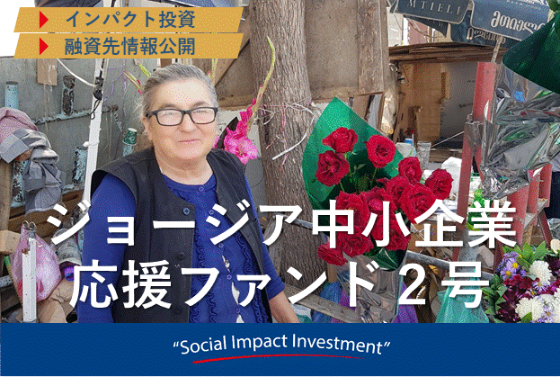

出資総額155,640,000円
口座開設数1075名
-
募集中マイクロファイナンス
モンゴル農家さん応援ファンド５号
応募金額¥8,320,000
募集金額 ¥12,000,000（最低投資金額 ¥20,000～）
応募金額 ¥8,320,000（69%）目標利回り（年率） 運用期間 分配 最低投資金額 6.20％ 1年 半年 ¥20,000 残り募集期間16日 3:46
-
募集中マイクロファイナンス
カンボジア農家さん応援ファンド８号
応募金額¥2,440,000
募集金額 ¥8,000,000（最低投資金額 ¥20,000～）
応募金額 ¥2,440,000（30%）目標利回り（年率） 運用期間 分配 最低投資金額 5.00％ 1年 半年 ¥20,000 残り募集期間5日 3:46
-
成立マイクロファイナンス
カンボジア農家さん応援ファンド７号
応募金額¥6,000,000
募集金額 ¥6,000,000（最低投資金額 ¥20,000～）
応募金額 ¥6,000,000（100%）目標利回り（年率） 運用期間 分配 最低投資金額 5.00％ 1年 半年 ¥20,000 残り募集期間－
-
成立マイクロファイナンス
モンゴル農家さん応援ファンド４号

応募金額¥6,000,000
募集金額 ¥6,000,000（最低投資金額 ¥20,000～）
応募金額 ¥6,000,000（100%）目標利回り（年率） 運用期間 分配 最低投資金額 5.10％ 1年 半年 ¥20,000 残り募集期間－
-
成立マイクロファイナンス
ジョージア中小企業応援ファンド２号
応募金額¥5,000,000
募集金額 ¥5,000,000（最低投資金額 ¥20,000～）
応募金額 ¥5,000,000（100%）目標利回り（年率） 運用期間 分配 最低投資金額 7.70％ 16ヶ月 その他 ¥20,000 残り募集期間－
-
成立マイクロファイナンス
モンゴル農家さん応援ファンド３号
応募金額¥6,880,000
募集金額 ¥6,880,000（最低投資金額 ¥20,000～）
応募金額 ¥6,880,000（68%）目標利回り（年率） 運用期間 分配 最低投資金額 5.10％ 1年 半年 ¥20,000 残り募集期間－
-
成立マイクロファイナンス
カンボジア農家さん応援ファンド６号

応募金額¥6,500,000
募集金額 ¥6,500,000（最低投資金額 ¥20,000～）
応募金額 ¥6,500,000（65%）目標利回り（年率） 運用期間 分配 最低投資金額 5.00％ 1年 半年 ¥20,000 残り募集期間－
-
成立マイクロファイナンス
ジョージア中小企業応援ファンド１号
応募金額¥5,000,000
募集金額 ¥5,000,000（最低投資金額 ¥20,000～）
応募金額 ¥5,000,000（100%）目標利回り（年率） 運用期間 分配 最低投資金額 7.70％ 16ヶ月 その他 ¥20,000 残り募集期間－
-
成立マイクロファイナンス
モンゴル農家さん応援ファンド２号
応募金額¥6,000,000
募集金額 ¥6,000,000（最低投資金額 ¥20,000～）
応募金額 ¥6,000,000（100%）目標利回り（年率） 運用期間 分配 最低投資金額 5.10% 1年 半年 ¥20,000 残り募集期間－
-
成立マイクロファイナンス
カンボジア農家さん応援ファンド５号
応募金額¥6,000,000
募集金額 ¥6,000,000（最低投資金額 ¥20,000～）
応募金額 ¥6,000,000（100%）目標利回り（年率） 運用期間 分配 最低投資金額 5.00％ 1年 半年 ¥20,000 残り募集期間－
社会的インパクト投資とは
社会的インパクト投資とは、あなたの投資が、貧困、環境、地方創生といった国内外の社会課題の解決につながる事業に使われ、投資のリターンも狙うものです。
【利回り・リターンのしくみ】
【Nextshift Fundの特徴】
1.社会的インパクト投資に特化
あなたの投資が投資リターンと社会課題の解決につながるようインパクト投資に特化しています。
2.独自の案件発掘力
国内外のネットワークを活かし、独自の投融資案件を発掘します。
3.利回りはしっかり狙う
通常の投資と同じく、より高い利回りも追求します。
【あなたのお金の流れ】
（カンボジアマイクロファイナンスファンドの例）
スタートアップガイド
―あなたもNextshift Fundをはじめてみましょう！―
-
無料会員登録ボタンからスタート！
無料会員登録ボタンを押して、画面からメールアドレスなどを入力します。
ご入力頂いたメールアドレスへ本申し込みのURLを送付します。 -
本登録申し込み
本登録フォームより、お客様の基本情報に加え、銀行口座情報の入力や、本人確認資料をご準備し、画像のアップロードをして頂きます。
-
口座開設完了
口座開設の審査を通過すると、ネクストシフトからご登録住所へ送達確認コードを郵送致します。ハガキに記載されているコードを所定ページで入力すると、口座開設が完了します。
-
投資予約
当サイトのファンド一覧から出資したいファンドをお選び頂き、出資金額を決定し投資を予約します。
-
入金
投資予約一覧ページよりネクストシフト指定の銀行口座へ出資金額を送金してください。
-
投資確定
指定口座に入金後、投資金額をご入力いただき、最終確認画面にて投資確定ボタンを押下して投資が完了いたします。